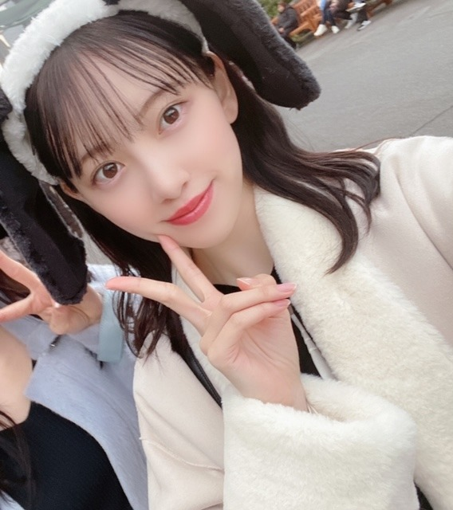
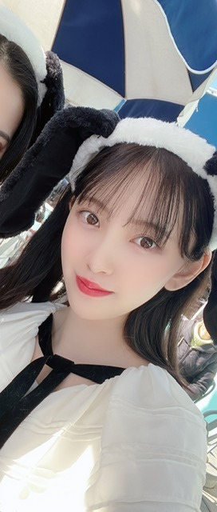
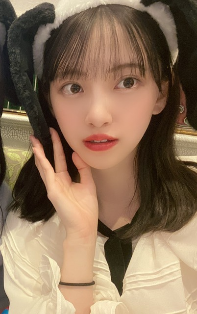
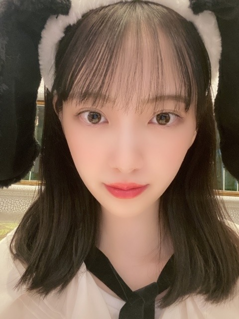

2019/1208Sun黒髪気分
黒髪にしましたー！
いつぶりやろ(^-^)？♪

明髪も個人的には好きだけど
たまに黒髪にすると落ち着きます。
どうですか？？？



写真たくさん♪♪
大阪行く度に大阪住みたいなーって思う。
食べ物美味しくて服安くて良き！
今日は23:00〜Abema TV
#乃木坂世界旅 のいいとこどり30分SPです！！
本編は14.15日ですが 今日のもみてね✨
きっと日奈子もわたしもリアタイ。笑
#堀北コンビ
ではでは。
2019/12/08 20:45
コメント(397)
未央奈さん、ブログ、インスタ更新ありがとう。
未央奈さん何でも似合うけど黒髪もすっごく似合ってるよ。
最近よく髪色変えるね。オシャレな証拠です。
かぶってるものも気になるな、長い耳。
どこ行ったんですか?大阪?
USJですか?
インスタ見たよ、フグ美味しそう。
世界旅必ず見るよ。
楽しみ楽しみ。
愛知握手会行きます、これも楽しみです。
じゃあね
未央奈さん何でも似合うけど黒髪もすっごく似合ってるよ。
最近よく髪色変えるね。オシャレな証拠です。
かぶってるものも気になるな、長い耳。
どこ行ったんですか?大阪?
USJですか?
インスタ見たよ、フグ美味しそう。
世界旅必ず見るよ。
楽しみ楽しみ。
愛知握手会行きます、これも楽しみです。
じゃあね
未央奈さん、こんばんは。
黒髪もお似合いです。
羨ましい！
自分の髪は白くなってきました（笑）。
黒髪もお似合いです。
羨ましい！
自分の髪は白くなってきました（笑）。
お疲れ様～！
今晩絶対みるよー！最近きいちゃん推し始めてるんだ
全ツの日常がきっかけです！
もちろん14日15日も見るよ！
今晩絶対みるよー！最近きいちゃん推し始めてるんだ
全ツの日常がきっかけです！
もちろん14日15日も見るよ！
未央奈ちゃん今晩は!
凄くお似合いですし、女性らしさが出てますね!来週は名古屋の握手会は勿論年末は音楽番組の出演が多くなりますけれども、お身体には気を付けてお過ごし下さい!
其れでは14日の握手会でお会いしましょう!
お休みなさい!
みおなちゃんはぱっつん黒髪スーパーロングが一番好きだったので、嬉しいです。黒髪だと白い肌が際立って、ますます儚げ美少女の雰囲気⭐
黒髪も似合っていてとても可愛いです いつも応援しています。これからも元気な姿を見せてください。
未央奈ちゃんと同じスヌーピーのカチューシャ持ってます！
とっても嬉しい
ほんとに可愛くて憧れです
とっても嬉しい
ほんとに可愛くて憧れです
写真多くて嬉しい！
黒髪未央奈もかわいい！
黒髪未央奈もかわいい！
[黒髪気分]ありがとー！
未央奈の黒髪、めっちゃ好っきゃねん❗(茶も良きです)
ホットギミックの未央奈がとても好きなので、
また黒髪未央奈が見れてうれしいです❗
次回のブログも楽しみです❗
未央奈の黒髪、めっちゃ好っきゃねん❗(茶も良きです)
ホットギミックの未央奈がとても好きなので、
また黒髪未央奈が見れてうれしいです❗
次回のブログも楽しみです❗
ブログ更新ありがとう〜！！
黒髪が1番好きです最高すぎる（ ; ; ）
大阪に来てくれてありがとう！大阪好きって言ってくれるの嬉しいしもう住んでほしいよ〜〜( 笑 )
堀北コンビずっと見てて癒されるしだいすきや〜忙しいと思うけど寒くなってきたし風邪には気をつけてお仕事頑張ってください！わたしも握手で会えるまで勉強と体調管理がんばりますよん！可愛い写真たくさんありがとう〜♡
れに
黒髪が1番好きです最高すぎる（ ; ; ）
大阪に来てくれてありがとう！大阪好きって言ってくれるの嬉しいしもう住んでほしいよ〜〜( 笑 )
堀北コンビずっと見てて癒されるしだいすきや〜忙しいと思うけど寒くなってきたし風邪には気をつけてお仕事頑張ってください！わたしも握手で会えるまで勉強と体調管理がんばりますよん！可愛い写真たくさんありがとう〜♡
れに
未央奈お疲れ様！ブログ更新ありがとう〜！
黒髪めっちゃ久々や！！めっちゃかわいいーー！！
やっぱ未央奈可愛いからなんでも似合う！！
世界旅もうスタンバイなうだよー！堀北コンビ楽しみっ！！
寒いから未央奈も風邪ひかないように暖かくしてね！
黒髪めっちゃ久々や！！めっちゃかわいいーー！！
やっぱ未央奈可愛いからなんでも似合う！！
世界旅もうスタンバイなうだよー！堀北コンビ楽しみっ！！
寒いから未央奈も風邪ひかないように暖かくしてね！
こんばんは！
黒髪凄く似合っていて、可愛いです
黒髪凄く似合っていて、可愛いです
ブログ更新ありがとｰ!!♡
みおなちゃんは髪色何色にしても似合うねｰ!!最高に可愛い(≧∇≦)
写真いっぱいありがとう〜
カチューシャ可愛いー！ めっちゃ似合ってる♡♡
堀北コンビ 楽しみ〜 絶対見るね〜
みおなちゃんは髪色何色にしても似合うねｰ!!最高に可愛い(≧∇≦)
写真いっぱいありがとう〜
カチューシャ可愛いー！ めっちゃ似合ってる♡♡
堀北コンビ 楽しみ〜 絶対見るね〜
この髪型ちょうど私のタイプなんです！本当に世界で一番かわいいです！
一月十九日の台北ライブも行きますから、楽しんでいます。今回はファンになってから初ライブなんで、どうぞよろしくお願いします。一所懸命に未央奈ちゃんと乃木坂ちゃんに応援しようと思います！
一月十九日の台北ライブも行きますから、楽しんでいます。今回はファンになってから初ライブなんで、どうぞよろしくお願いします。一所懸命に未央奈ちゃんと乃木坂ちゃんに応援しようと思います！
あべま 絶対観る
個人的には、黒髪の方が似合っていると思います！
お疲れ様です!
元がいいと何しても似合うから羨ましい限りです（╹◡╹）
未央奈！
久しぶりにコメントします〜。
黒髪もいいよね！
俺は黒髪の方が好みだな〜。
明るい髪でも好きなんだけどね笑
この後、今野さんほっといてよですね！
楽しみにしてます！
久しぶりにコメントします〜。
黒髪もいいよね！
俺は黒髪の方が好みだな〜。
明るい髪でも好きなんだけどね笑
この後、今野さんほっといてよですね！
楽しみにしてます！
絶対黒髪のほうがいいですよ 日本人女性はきれいな黒髪が一番魅力的なんですよ
黒髪も似合うよ！
どちらにせよ可愛い過ぎる♪
堀北コンビが早く観たいし放送が楽しみ！
どちらにせよ可愛い過ぎる♪
堀北コンビが早く観たいし放送が楽しみ！
未央奈ブログ更新ありがとう！
黒髪も可愛くて最高！
ユニバ楽しそうでええな〜
今日の見るね。もちろん本編もちゃんとリアタイで見るね！では
黒髪も可愛くて最高！
ユニバ楽しそうでええな〜
今日の見るね。もちろん本編もちゃんとリアタイで見るね！では
みおちゃん、こんばんはー！
黒髪かわいーよー！！美人さん♪
世界旅わくわく。もうすぐ(^-^)
ではでは。
黒髪かわいーよー！！美人さん♪
世界旅わくわく。もうすぐ(^-^)
ではでは。
ブログ更新ありがとうございまーーーす❗✌️。
そして未央奈ちゃんの黒髪姿はとても美しいです❗♥️。
あと大阪のユニバーサル・スタジオ・ジャパンに行ったときのスヌーピーのカチューシャ姿はとても可愛かったです♥️♥️♥️。
未央奈ちゃんと北野日奈子ちゃん出演で14・15日にAbemaTVで放送される「乃木坂世界旅」の番組見れたら見まーーす❗✌️。
そして未央奈ちゃんの黒髪姿はとても美しいです❗♥️。
あと大阪のユニバーサル・スタジオ・ジャパンに行ったときのスヌーピーのカチューシャ姿はとても可愛かったです♥️♥️♥️。
未央奈ちゃんと北野日奈子ちゃん出演で14・15日にAbemaTVで放送される「乃木坂世界旅」の番組見れたら見まーーす❗✌️。
黒髪未央奈を久しぶりに見たけども、やっぱ可愛いなぁ(^-^)
はじめまして
岡山の高校2年生の男子です
いつもブログ更新ありがとうございます！
明るい色の髪の毛の未央奈も良いけど、たまに黒色にするのもまた良い感じです！
コメント読んでくれてありがとう！
岡山の高校2年生の男子です
いつもブログ更新ありがとうございます！
明るい色の髪の毛の未央奈も良いけど、たまに黒色にするのもまた良い感じです！
コメント読んでくれてありがとう！
いつもお疲れ様です✨
黒髪めっちゃ可愛いですね〜
未央奈ちゃんはどの髪型でも素敵です！✨
AbemaTVの乃木坂世界旅見るね！
大阪に住んでー！（笑）
また、今月の全国握手会(インテックス大阪)で
待ってるね〜！
ブログ更新ありがとうー！
これからも年末年始忙しいと思うけど
頑張ってねー！
応援してるね
黒髪めっちゃ可愛いですね〜
未央奈ちゃんはどの髪型でも素敵です！✨
AbemaTVの乃木坂世界旅見るね！
大阪に住んでー！（笑）
また、今月の全国握手会(インテックス大阪)で
待ってるね〜！
ブログ更新ありがとうー！
これからも年末年始忙しいと思うけど
頑張ってねー！
応援してるね
みおな
今日もお疲れ様です
黒髪が復活しましたね
黒髪みおなを見るのは遡る事、1年くらい前だと思われます
ダークグレージュにしたと言っていたのが、印象に残っているので（覚えてるの怖いよね笑）
みおなは黒髪が一番似合ってると個人的には思います
だけど、みおながこの先茶髪でも金髪になっても、みおなが決めた事なら、それが一番になるから、髪以外でもらしさを捨てずに頑張って下さい
黒髪みおなが一番好きだからとても可愛いです（初ちゃんの時とか好き）
今日は写真が多めでよかったです
またブログ待ってるね
ありがとうございました
P.S.歌謡祭とかたくさん出てるから、全部観てますよ！
今日もお疲れ様です
黒髪が復活しましたね
黒髪みおなを見るのは遡る事、1年くらい前だと思われます
ダークグレージュにしたと言っていたのが、印象に残っているので（覚えてるの怖いよね笑）
みおなは黒髪が一番似合ってると個人的には思います
だけど、みおながこの先茶髪でも金髪になっても、みおなが決めた事なら、それが一番になるから、髪以外でもらしさを捨てずに頑張って下さい
黒髪みおなが一番好きだからとても可愛いです（初ちゃんの時とか好き）
今日は写真が多めでよかったです
またブログ待ってるね
ありがとうございました
P.S.歌謡祭とかたくさん出てるから、全部観てますよ！
黒髪の方が似合ってるよ！
堀ちゃんお疲れ様です！
黒髪の堀ちゃんが大好きです！初めて堀ちゃんを観た時が黒髪だったのでその印象が凄く残ってます！
インスタも見ましたよぉ！更新頻度が高くて凄く嬉しいです！
可愛い動画、写真たくさんありがとう！
この年末も忙しいと思いますが体調に気をつけて頑張ってください！
黒髪の堀ちゃんが大好きです！初めて堀ちゃんを観た時が黒髪だったのでその印象が凄く残ってます！
インスタも見ましたよぉ！更新頻度が高くて凄く嬉しいです！
可愛い動画、写真たくさんありがとう！
この年末も忙しいと思いますが体調に気をつけて頑張ってください！
みおたんきゃわたん♡
未央奈～！
もちろん黒髪も可愛いよ❤️
きいちゃんとの二人旅、絶対楽しそう！
堀北コンビ好きだよ～！！
私事ですが、最近気が滅入ってまして…。
未央奈に癒しもらえました。
ありがとう…！！
もちろん黒髪も可愛いよ❤️
きいちゃんとの二人旅、絶対楽しそう！
堀北コンビ好きだよ～！！
私事ですが、最近気が滅入ってまして…。
未央奈に癒しもらえました。
ありがとう…！！
めっちゃくちゃ可愛いです。
世界旅楽しみにしてまーす
世界旅楽しみにしてまーす
基本の黒髪、納得です！
めっかわ！❤
黒髪良いね〜(ﾟ∀ﾟ)
すごいにあってるよ！！
黒髪の未央奈ちゃん大好き！
色白美肌が際立ちます
色白美肌が際立ちます
未央奈～ こんにちは
ブログ更新ありがとうございます。
「黒髪」、やっぱり未央奈は黒髪の方が似合う。「緑の黒髪」ということばありますが、豊かな感じがしますね。ほらほら、もしかして「じょしらく」のときの「緑髪」思い出したとか‥‥、違いますよ。
ということは、今度全握でお会いできるのは「黒髪」の未央奈ってこと？ それは楽しみです。それにもう一つ、「路面電車」のフルコーラス披露も‥‥、よろしくお願いします。
そして、いよいよ近づいてきましたね。堀北世界旅、今日はいいとこ紹介で、来週本番。私たちを海外に連れて行ってくださいね。楽しみにしております。
ブログ更新ありがとうございます。
「黒髪」、やっぱり未央奈は黒髪の方が似合う。「緑の黒髪」ということばありますが、豊かな感じがしますね。ほらほら、もしかして「じょしらく」のときの「緑髪」思い出したとか‥‥、違いますよ。
ということは、今度全握でお会いできるのは「黒髪」の未央奈ってこと？ それは楽しみです。それにもう一つ、「路面電車」のフルコーラス披露も‥‥、よろしくお願いします。
そして、いよいよ近づいてきましたね。堀北世界旅、今日はいいとこ紹介で、来週本番。私たちを海外に連れて行ってくださいね。楽しみにしております。
未央奈さん☆❤️❤️❤️❤️❤️❤️ 今晩は♫ 今日も未央奈さん☆が元気でいてくれているので嬉しいです！ （＾∇＾） 未央奈さん☆今日もモバメとインスタグラムとブログの更新！ありがとう☆彡 最近は未央奈さん☆、風邪気味なので心配しています。大丈夫ですか？ これから冬本番なので気をつけてお過ごしください！ 年末は特に忙しい時期なので、お身体にはお気をつけて‥ (^-^) 未央奈さん☆！黒髪よく似合ってますよ❤️❤️❤️❤️❤️❤️❤️❤️❤️❤️ 可愛い〜！！❤️❤️❤️❤️❤️❤️❤️❤️❤️ (o^^o) 写真もたくさんありがとう☆彡！ やはり日本の女性は黒髪がよく似合っていると思うんですよ！ だから最近は変な風潮だと思います。あのパリコレのトップモデルだった故山口小夜子さんも日本人として黒髪に最後までこだわっていたそうですから。未央奈さん☆❤️❤️❤️❤️ 乃木坂のおしゃれ番長としての未央奈さん☆に、これからもますます期待しています！ (o^^o) でも未央奈さん☆は、それにも増して演技力がありますから、女優としての未央奈さん☆もたくさん見てみたいですね❤️❤️❤️❤️ いつか是枝監督にも気に入られると思いますよ！ それに未央奈さん☆だったらジブリ作品にも呼ばれると思いますし、あとは事務所の方々の企画力次第ですね！ 未央奈さん☆をよく理解してくれて女優として大切に育ててくれる監督さん達に恵まれるといいですね！勿論モデル活動もしながら未央奈さん☆！多方面で頑張ってネ❤️❤️❤️❤️❤️❤️ (^_^)v
じゃあ、未央奈さん☆！今夜もおやすみおな♫♫♫ １日お疲れ様でした。風邪ひかないでネ❤️❤️❤️❤️❤️❤️❤️❤️❤️❤️❤️❤️❤️❤️❤️❤️❤️❤️❤️❤️❤️❤️❤️❤️❤️❤️❤️ あと今夜はAbema TV 頑張ってくださいね！ （＾_＾）
じゃあ、未央奈さん☆！今夜もおやすみおな♫♫♫ １日お疲れ様でした。風邪ひかないでネ❤️❤️❤️❤️❤️❤️❤️❤️❤️❤️❤️❤️❤️❤️❤️❤️❤️❤️❤️❤️❤️❤️❤️❤️❤️❤️❤️ あと今夜はAbema TV 頑張ってくださいね！ （＾_＾）
堀ちゃん、こんばんは＼(＾▽＾)／
黒髪、いいと思うよー♪
乃木坂世界旅いいとこどり、見たよ。
すごく楽しそうだったね
水上バイク乗ってみたいっ！
本編がますます楽しみになってきたよ
黒髪、いいと思うよー♪
乃木坂世界旅いいとこどり、見たよ。
すごく楽しそうだったね
水上バイク乗ってみたいっ！
本編がますます楽しみになってきたよ
黒髪めっちゃかわいい
こんばんは、お疲れ様です！
僕も今日ユニバいました！！(クルー)
楽しめて頂けたなら良かったです^_^
年末年始、ここから忙しくなってくると思いますが、体調にお気をつけて頑張ってください！！
僕も今日ユニバいました！！(クルー)
楽しめて頂けたなら良かったです^_^
年末年始、ここから忙しくなってくると思いますが、体調にお気をつけて頑張ってください！！
未央奈ちゃんこんばんは。乃木坂世界旅の先行放送、先ほど見させていただきました。
美しい海ではしゃぐ未央奈ちゃんと日奈子ちゃん、素が出てる感じがとても良かったです。本編では2人がじっくり話した内容もとても気になるところですね。とにかく今週末の放送がより楽しみになりました。
久しぶりに黒髪にしたんですね。未央奈ちゃんは基本的に可愛くてオシャレだからどんな髪色でも似合っちゃうんだけど、僕は個人的には未央奈ちゃんの白く透き通るような肌には黒髪が一番似合うと思っているので、久しぶりに黒髪が拝めるのはとても嬉しいです。
喉の調子がなかなか完調に戻らないってモバメで言っていたので、今はそれだけが心配です。体調にはより一層気を付けて、年末の時期の特別なお仕事を楽しみながら頑張って下さい。
これからも応援しています。
美しい海ではしゃぐ未央奈ちゃんと日奈子ちゃん、素が出てる感じがとても良かったです。本編では2人がじっくり話した内容もとても気になるところですね。とにかく今週末の放送がより楽しみになりました。
久しぶりに黒髪にしたんですね。未央奈ちゃんは基本的に可愛くてオシャレだからどんな髪色でも似合っちゃうんだけど、僕は個人的には未央奈ちゃんの白く透き通るような肌には黒髪が一番似合うと思っているので、久しぶりに黒髪が拝めるのはとても嬉しいです。
喉の調子がなかなか完調に戻らないってモバメで言っていたので、今はそれだけが心配です。体調にはより一層気を付けて、年末の時期の特別なお仕事を楽しみながら頑張って下さい。
これからも応援しています。
明るい髪色もよかったけど黒髪の未央奈さんとても素敵です
AbemaTV見たよ
１４日、１５日の本編が楽しみです
AbemaTV見たよ
１４日、１５日の本編が楽しみです
黒髪大好きだし茶髪も大好きです笑笑 どっちも似合うってすごいなぁ笑笑 ニューカレドニアの先取りみたよ！！笑いっぱなしでした笑笑 ファッションというのか、可愛いからなのか、すごい映えだし癒しだなぁって笑笑 バイトの疲れ吹き飛んだよ！本編が楽しみです！あと、755いっぱい引用ありがとう！もう泣きそうでした、、引用されたメンバーがレコメンの女心で読まれた順やん！とも思って嬉しかった笑笑 握手会がすごく楽しみです！！大好き！
ももんが
ももんが
好き。
未央奈の黒髪めっちゃ可愛い！
未央奈とユニバ行きたい笑
年末の歌番組体調に気をつけて頑張って！
未央奈とユニバ行きたい笑
年末の歌番組体調に気をつけて頑張って！
大阪はサイコーなんでいつかでいいから住んでみてー


パンダバンド？？が気になるー
大阪のどこで買ったんですか？